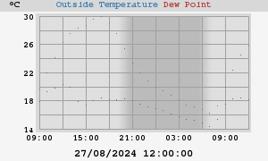

Outside temperature
24h temperature

Today's min: 16,1°C at 06:37:20
Today's max: 27,3°C at 11:58:55
7-day temperature
This week's min: 16,1°C at 06:37:20 (martedì)
This week's max: 30,6°C at 16:39:25 (lunedì)
weewx v3.7.1